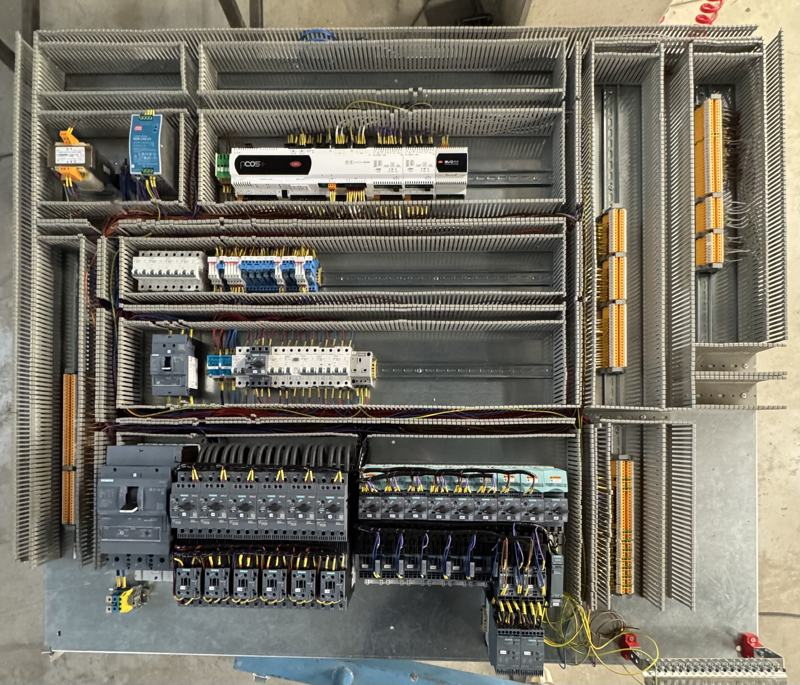
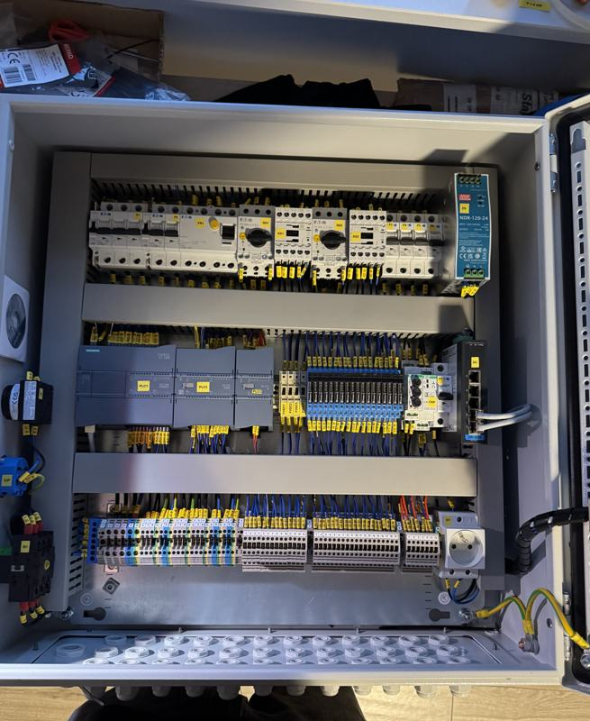
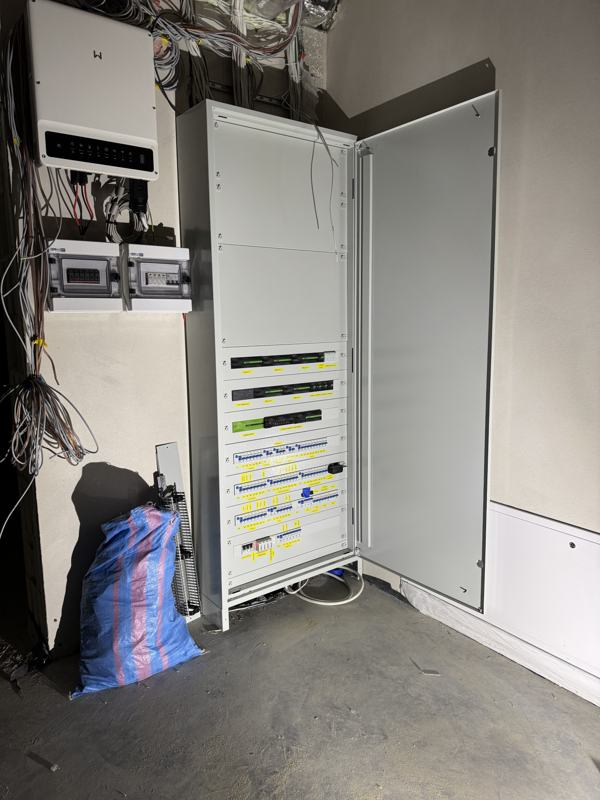
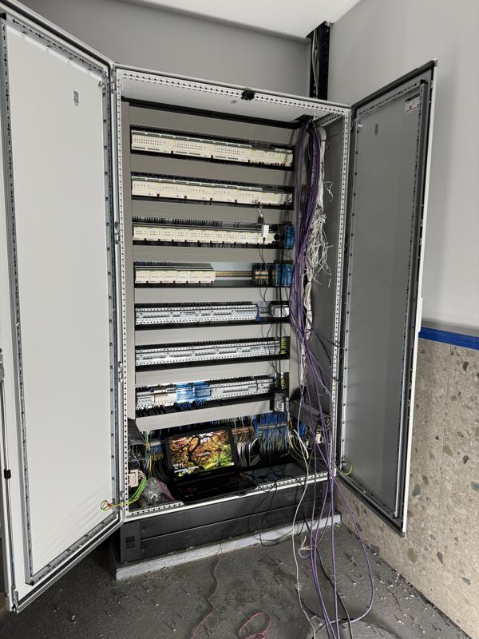

Prefabrykacja płyty montażowej szafy sterowniczej
Kompletna płyta montażowa: zasilanie, zabezpieczenia, styczniki i przekaźniki, listwy zaciskowe. Okablowanie w korytach, przewody opisane zgodnie ze schematem.
Zonik Automation · Warszawa i cała Polska
Projektujemy, budujemy i uruchamiamy układy sterowania dla zakładów produkcyjnych, stacji uzdatniania wody i branży farmaceutycznej. Od schematu, przez program PLC, po protokół z pomiarów.
Usługi
Łączymy projekt, prefabrykację, programowanie i pomiary. Nie musisz koordynować kilku firm — odpowiadamy za całość i przekazujemy kompletną dokumentację.
Szafy sterownicze i układy automatyki dla maszyn, linii produkcyjnych i instalacji technologicznych — od projektu po uruchomienie.
Oprogramowanie sterowników i paneli operatorskich — nowe aplikacje, zmiany w istniejących programach i diagnostyka.
Pomiary odbiorcze i okresowe instalacji oraz maszyn — z protokołem, który przyjmie inspektor, ubezpieczyciel i dział UR.
Schematy elektryczne, projekty szaf sterowniczych i dokumentacja powykonawcza w EPLAN i AutoCAD.
Branże
Pracujemy tam, gdzie przestój kosztuje, a dokumentacja i powtarzalność są wymagane — nie opcjonalne.
Stacje uzdatniania wody i układy pompowe — sterowanie, pomiary, praca ciągła bez przestojów.
Instalacje i maszyny w zakładach farmaceutycznych, gdzie liczy się dokumentacja i powtarzalność.
Automatyka maszyn do mycia, sortowania i obróbki — odporna na wilgoć i środowisko produkcji.
Sterowanie maszynami i liniami — od pojedynczego stanowiska po kompletną linię z HMI.
Realizacje
Każda szafa i każdy układ przechodzi przez nasze ręce od projektu do uruchomienia. Kliknij zdjęcie, aby je powiększyć.

Kompletna płyta montażowa: zasilanie, zabezpieczenia, styczniki i przekaźniki, listwy zaciskowe. Okablowanie w korytach, przewody opisane zgodnie ze schematem.

Projekt, montaż i uruchomienie szafy sterowniczej z modułami I/O, zasilaniem 24 V DC i zabezpieczeniami obwodów.

Montaż, podłączenie i uruchomienie rozdzielnicy z modułami automatyki. Oznaczone obwody i dokumentacja powykonawcza.

Okablowanie szafy wolnostojącej z modułami wejść/wyjść, uporządkowane trasy kablowe i rezerwa miejsca na rozbudowę.
Standard wykonania
Układ, który działa dziś, to połowa sukcesu. Druga połowa to możliwość jego serwisu i rozbudowy za kilka lat — także przez kogoś innego.
01
Aktualne schematy zgodne ze stanem faktycznym, lista I/O i zestawienie aparatury — w wersji PDF i edytowalnej.
02
Pomiary wykonane przez osoby z uprawnieniami SEP E + D, z protokołem gotowym do odbioru.
03
Pełny, opisany projekt oprogramowania. Nie zostajesz zależny od jednej osoby ani jednego laptopa.
04
Opisane przewody i aparaty, uporządkowane trasy kablowe i rezerwa miejsca na rozbudowę.
05
Testujemy układ na obiekcie i pokazujemy operatorom oraz utrzymaniu ruchu, jak z niego korzystać.
06
Pomagamy w diagnostyce, zmianach w programie i rozbudowie — także po zakończeniu projektu.
Jak pracujemy
Na każdym etapie wiesz, co się dzieje i co będzie dalej.
Poznajemy obiekt, problem i oczekiwania. W razie potrzeby — wizja lokalna.
Konkretny zakres, dobór aparatury i harmonogram. Bez niespodzianek w trakcie.
Szafy budujemy w warsztacie, a na obiekcie montujemy je sprawnie i czysto.
Programowanie, testy funkcjonalne, pomiary elektryczne i odbiór.
Komplet dokumentacji, kopia programu i nasza dostępność po odbiorze.
Sprzęt i oprogramowanie
Dobieramy aparaturę i sterowniki, które są dostępne, serwisowalne i znane działom utrzymania ruchu.
FAQ
Bazujemy w Warszawie, ale realizujemy projekty w całej Polsce. Prefabrykację szaf wykonujemy u siebie, a na obiekt przyjeżdżamy na montaż, uruchomienie i pomiary.
Tak. Regularnie modyfikujemy i rozbudowujemy istniejące programy — także bez dokumentacji. Zaczynamy od kopii zapasowej i analizy programu, a po zmianach przekazujemy zaktualizowany projekt.
Tak. Po każdym pomiarze otrzymujesz protokół z wynikami i oceną. Pomiary wykonują osoby z uprawnieniami SEP E + D.
Tak — odtwarzamy schematy na podstawie stanu faktycznego i przygotowujemy aktualną dokumentację w EPLAN lub AutoCAD.
Opisz zakres w formularzu lub zadzwoń. Przy prostszych zleceniach wycenę przygotowujemy na podstawie opisu i zdjęć, przy większych — po rozmowie lub wizji lokalnej. Wycena jest bezpłatna.
Tak. Po zakończeniu projektu pozostajemy dostępni — pomagamy w diagnostyce, zmianach w programie i rozbudowie układu.
Kontakt
Opisz obiekt, zakres i termin. Odpowiemy w ciągu 1 dnia roboczego i przygotujemy bezpłatną wycenę. Możesz też od razu zadzwonić.